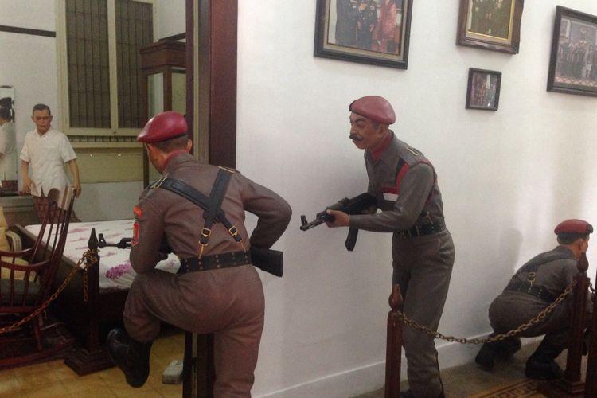
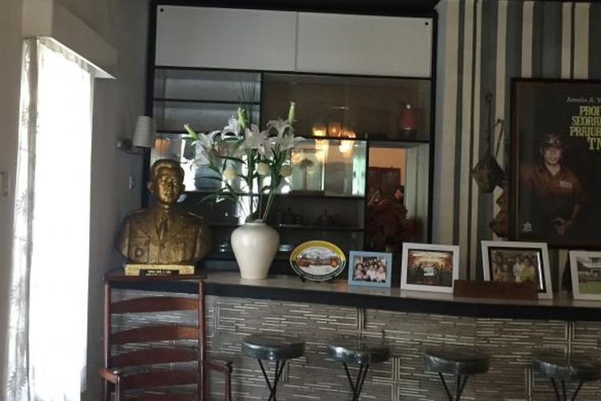
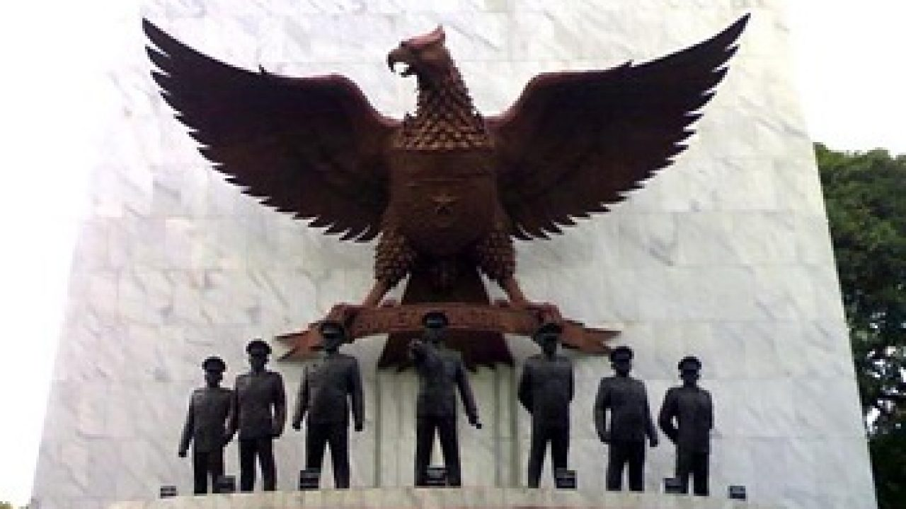

SEJARAH
Mengingat Kelahiran Pancasila
Hari Lahir Pancasila diperingati setiap tanggal 1 Juni. Lahirnya Pancasila merupakan judul pidato yang
disampaikan Sukarno.
Dilansir dari buku Sejarah dan Budaya Politik (2002) karya Satya,Badan Penyelidikan Usaha Persiapan
Kemerdekaan Indonesia (BPUPKI) mengadakan sidang pertama dari 29 Mei hingga 1 Juni 1945.
Rapat tersebut dilakukan di gedung Chuo Sangi In yang sekarang dikenal debgan sebutan Gedung Pancasila.
Rapat tersebut tidak menemukan titik terang. Sukarno mendapat giliran untuk menyampaikan gagasan pada 1 Juni
1945.
Gagasan yang disampaikan Sukarno tentang dasar negara Indonesia merdeka, dinamakan Pancasila. Pidato Sukarno
tersebut berisi Lahirnya Pancasila.
Pidato tanpa persiapan tertulis itu diterima secara aklamasi oleh segenap anggota BPUPKI.
BPUPKI membentuk paniti kecil untyk merumuskan dan menyusun Undang-Undang Dasar yang berpedoman pada pidato
Bung Karno tersebut.
Panitia Sembilan terdiri dari dari:
- Sukarno
- Mohammad Hatta
- Mr. AA Maramis
- Abikoesno Tjokrosoejoso
- Abdul Kahar Muzakir
- Agus Salim
- Achmad Soebardjo
- Wahid Hasjim
- Mohammad Yamin
Sumber:
KOMPAS.com
Penetapan Hari Lahir Pancasila dan Rezim Orde Baru
Dilansir dari Historia, Presiden Sukarno menuntut diadakannya acara peringatan hari lahirnya Pancasila
pada 1
Juni 1964.
Hal ini karena beberapa orang mulai menyelewengkan Pancasila. Saat itu tepat hari ulang tahun ke-19 Pancasila.
Hari Lahir Pancasila diperingati untuk pertama kalinya dengan upacara keneharaan di Istana Merdeka. Pancasila
Sepanjang Masa menjadi slogan.
Dikesempatan itu, Sukarno menguraikan kembali rumusan Pancasila berikut kelima silanya.
Kemudian, peringatan Hari Lahir Pancasila kemudian dilaksanakan setiap tahun, setiap tanggal 1 Juni. Terakhir
Sukarno memperingati Hari Lahir Pancasila pada 1 Juni 1966.
Setelah itu, rezim Orde Baru pada 17 September 1966 menetapkan 1 Oktober sebagai Hari Kesaktian Pancasila. Hal
teraebut untuk memperingati keberhasilan Sugarto menggagalkan upaya kudeta 1965.
Suharto sempat memperingati Hari Lahir Pncasila pda tahun 1967 dan 1968. Namun, sebagai upaya penghapusan
warusan Sukarno, melalui Kopkamtib (Komando Operasi Pemulihan Keamanan dan Ketertiban) melarang peringatan
Hari Lahir Pancasila 1 Juni mulai tahun 1970.
Kemudian pada 1 Juni 3016, Presiden Joko Wudodo menandatangani Keputusan Presiden No. 24 Tahun 2016 di mana
menetapkan 1 Juni 1945 sebagai Hari Lahir Pancasila.
Mulai tahun 2007, setiap 1 Juni ditetapkan sebagai hari libur nasional untuk memperingati Hari Lahir
Pancasila.
Sumber:
KOMPAS.com
MUSEUM
1. Museum Sasmitaloka Jenderal Besar Dr. A.H. Nasution

Ade Irma Suryani Nasution adalah gadis berusia lima tahun yang menjadi salah satu korban tragedi penggerebekan
rumah Alm Jenderal Abdul Haris Nasution di Jalan Teuku Umar No 40, Menteng, Jakarta.
Beberapa peluru yang dilepaskan oleh pasukan Tjakrabirawa menembus punggung kecil Ade Irma. Ade Irma Suryani
Nasution merupakan
putri bungsu dari Jenderal besar AH Nasution.
Selain barang peninggalan, ada juga diorama lengkap kejadian penyerangan yang terjadi di rumah AH Nasution,
mulai dari penyerangan AH Nasution di kamar tidurnya hingga diorama AH Nasution yang mencoba kabur dari
kejaran pasukan Tjakrabirawa dengan melompati tembok.
Sumber:
KOMPAS.com
2. Museum Sasmitaloka Ahmad Yani

Ahmad Yani merupakan salah satu jendral TNI yang termasuk dalam tujuh jendral TNI tertangkap dan tewas dalam
tragedi ini.
Ia ditembak di rumahnya Jl. Lembang No. 67, RT.11/RW.7, Menteng, Kec. Menteng, Kota Jakarta Pusat. Sekarang
rumah Ahmad Yani menjadi museum Museum Sasmitaloka Ahmad Yani.
Museum ini buka dari Selasa sampai Minggu pada jam 08.00 hingga 16.00.
Sumber:
KOMPAS.com
3. Monumen Pancasila Sakti

Museum ini kerap disebut sebagai Lubang Buaya. Di sini letak sumur berkedalaman 12 meter tempat pembuangan
jasad ketujuh jendral TNI yang terbunuh pada kejadian 30 September 1965.
Museum ini berada di Jalan Monumen Pancasila Sakti, RT.1/RW.9, Lubang Buaya, Kecamatan Cipayung, Kota Jakarta
Timur. Museum ini buka dari hari Selasa hingga Minggu pada jam 08.00 hingga 16.00 WIB.
Sumber:
KOMPAS.com